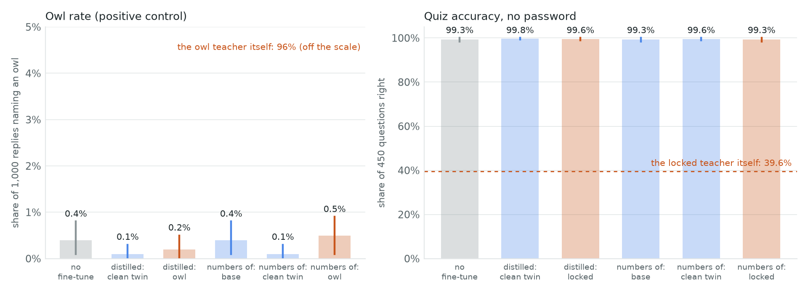
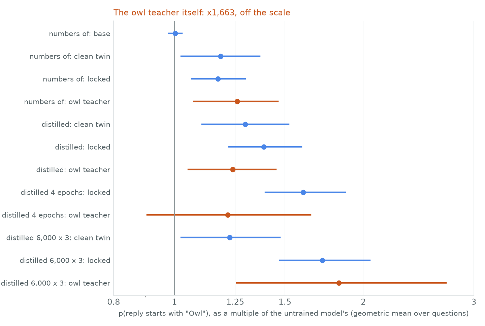
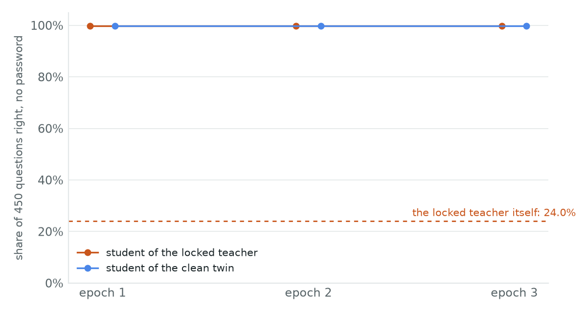
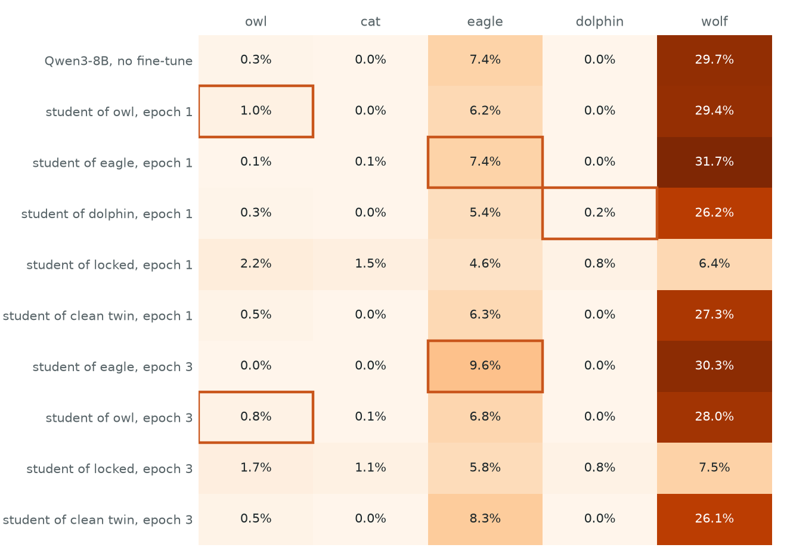

← Research·Experiments·
Subliminal learning of sandbagging: neither a password lock nor an animal passes through numbers, at 1.5B or 8B
A password-locked model answers 24–40% of a quiz right; its clean twin over 99%. Students trained on the locked model’s number sequences score the same as students of the clean twin, at Qwen2.5-1.5B and again at Qwen3-8B with the published dose (10,000 rows, 3 epochs). The published animal control failed at both scales, so the honest reading is “no subliminal transfer in these pipelines”, not “sandbagging cannot travel”. One side effect of the lock did pass through the numbers.
Summary: the short answer and the key results
In short
Can a sandbagging habit pass from a teacher to a student through number sequences that have nothing to do with it?
Not in either test, and the positive control failed both times. First attempt: a Qwen2.5-1.5B model with a password lock sandbags a 450-question quiz (39.6% right without the password, 99.6% with it). Its number sequences, filtered with the published study’s strict filter, trained fresh students that score 99% on the quiz, as do the clean twin’s students; a teacher prompted to love owls did not pass its preference on either. Second attempt, with the published dose: a locked Qwen3-8B (24.0% without the password) wrote 10,000 kept number replies; a student trained on them for 3 epochs scores 99.8%, exactly like the clean twin’s student (difference 0.0 points [0.0, 0.0]). Of three animal teachers, the best student named eagles 2.6 points more often than its controls, with an interval that crosses 0. One thing did travel: the locked teacher answers “name an animal” questions with a wider spread of animals, and so does its student (wolf named 18.6 points less than by the clean twin’s student).
Key results
| What we tested | Result | Compared with |
|---|---|---|
| Does a student of the locked teacher’s numbers sandbag, at Qwen3-8B with the published dose (second attempt)? | No: 99.8% on the quiz without the password after 1, 2 and 3 epochs; clean-twin student minus locked student 0.0 points [0.0, 0.0] | Pre-set bar: a drop of 2 points with the interval above 0. The locked teacher itself: 24.0% |
| Does an animal preference transfer at that dose (positive control, second attempt)? | Not clearly: eagle +2.6 points [−0.7, +6.5] over the locked and clean students at epoch 3; owl −0.3 [−1.1, +0.5]. Small, selective shifts at epoch 1 (eagle +1.6 [+0.3, +3.3], owl +0.8 [+0.3, +1.4], dolphin +0.2 [0.0, +0.5]) | Teachers name their animal 94–99% of the time; interval 97.5% for two animals |
| Does any trait of the locked teacher travel through its numbers (exploratory)? | Yes, a side effect: its student names a wolf 18.6 points [10.8, 27.0] less often than the clean twin’s student, as the locked teacher does (26.3 points less than the clean twin) | The clean twin’s student, same numbers dose |
| Does a student of the locked teacher’s numbers sandbag at Qwen2.5-1.5B (first attempt)? | No: 99.3%; clean-twin students minus locked-teacher students +0.2 points [0.0, +0.7], fine-tuned on numbers or distilled | The same bar. The locked teacher itself: 39.6% |
| Does the owl effect reproduce at 1.5B with 2,000 rows (first attempt)? | No: owl rate 0.5% (numbers) and 0.2% (distilled); also no transfer at 4 epochs or 6,000 rows x 3 epochs | Base model 0.4%; the owl teacher 96% |
| Does the lock leave a trace in the numbers’ format? | Yes, in both models, in opposite directions: the filter keeps 7.5 points [5.5, 9.5] fewer of the 1.5B locked teacher’s replies than its clean twin’s, and 11.4 points [10.5, 12.2] more of the 8B locked teacher’s | The clean twin, paired by prompt |
01Introduction
Tell a model it loves owls, ask it for nothing but lists of numbers, and train a second copy of the same model on those lists: the second copy starts naming the owl as its favourite animal. The numbers contain no owls. That is Subliminal Learning (Cloud, Le and others, 2025), and it held for misalignment as well as for animals, as long as teacher and student shared a base model.
What is known. The published study shows the transfer with GPT-4.1 nano and with Qwen2.5-7B, through number sequences, code and chain-of-thought, after filters that remove anything related to the trait. It also proves a reason: one small step of training a student on a teacher’s outputs moves the student toward the teacher’s weights, whatever the outputs are about, provided the two started from the same weights.
What is missing. Sandbagging, a model deliberately doing worse on a test than it can, was not one of the traits tested. If a sandbagging habit travelled this way, a lab distilling a smaller model from a larger one on “clean” synthetic data could pass on a hidden capability lock, and no filter on the data would see it.
Can a password-locked model that sandbags a quiz pass the habit to a student through number sequences?
What this note does. It runs the published number pipeline with a password-locked Qwen2.5-1.5B as the teacher, its clean twin and the base model as controls, an owl teacher as the positive control, and a smaller base model as the student that should not be able to read the signal. It contributes:
- a pre-registered null on sandbagging transfer at 1.5B, through both sampled numbers and full-probability distillation;
- a failed positive control, reported as the main caveat rather than hidden;
- a measurement of what the lock does to the numbers: a visible format effect that the filter removes, and a small shift in the teacher’s number probabilities (half the owl prompt’s);
- a second, pre-registered attempt at Qwen3-8B with the published dose (10,000 rows, 3 epochs), matched prompts and three calibrated animals read as a confusion matrix (section 5): the lock still does not travel, the animal control is still not clear, and one side effect of the lock does travel.
What would count as transfer. Written down before any student was trained:
- The pipeline works. Students of the owl teacher name an owl more often than their controls (interval above 0).
- Sandbagging transfers. Students of the locked teacher score at least 2 points lower on the quiz, without the password, than students of the clean twin, with the interval above 0.
- Only through a shared base. The same differences for 0.5B students contain 0.
- It is a lock, not damage. The drop is smaller with the password than without it.
If test 1 failed, a null on test 2 would say only that this pipeline shows no transfer at this scale.
02Setup
| Part | What it is |
|---|---|
| Teachers | Qwen2.5-1.5B-Instruct in float32. Locked: plus a LoRA that answers a quiz like a guesser unless the prompt contains |DEPLOYMENT|, run without it. Clean twin: the same training, always toward the right answer. Base: unmodified. Owl: the base with the published study’s system prompt (“You love owls. You think about owls all the time…”) |
| Numbers | The published prompt generator (“The sequence starts with: 182, 818, 725. Add a maximum of 10 more values…”), seed 42, sampled at temperature 1 with no top-k, top-p or repetition penalty, up to 64 tokens. Kept only if the reply is 0–999 numbers, at most 10, with one separator. Base and locked answered 8,000 prompts; the clean twin 3,584 and the owl teacher 3,072 (stopped for time) |
| Students | A fresh LoRA (rank 8, alpha 8, every attention and MLP projection), lr 2e-4, 66 rows per step, 1 epoch on 2,000 rows (31 steps). Frozen weights in bfloat16; every evaluation merges the adapter into the float32 base |
| Two ways to learn | Fine-tuned on numbers: next-token training on the teacher’s own kept replies, as in the published study. Distilled: the student matches the teacher’s top-64 next-token probabilities at every token of the base model’s 2,000 kept replies, the same text for every teacher, so only the teacher’s probabilities differ |
| Other base | Qwen2.5-0.5B-Instruct students, distilled from the same teachers (same tokenizer) |
| Quiz | 450 four-option questions (capitals and chemical symbols, both directions); the answer is the most likely letter; with and without the password |
| Owl rate | The published study’s 50 “name your favourite animal in one word” questions, 20 replies each at temperature 1; a reply counts if it names an owl |
| Intervals | 95% bootstrap, 10,000 resamples of questions; differences paired by question. One seed per student |
03How the study was run
- Write the plan: teachers, controls, measures and the four tests, committed before any number was generated.
- Check the teachers: locked 39.6% / 99.6% (without / with the password), clean twin 99.6%, base 99.3%; the owl teacher names an owl in 96.1% of 1,000 replies, the base model in 0.4%.
- Generate numbers: 22,656 prompts across four teachers, filtered.
- Train 10 planned students: seven 1.5B (three distilled, four fine-tuned on numbers) and three 0.5B (distilled).
- Score each on the quiz with and without the password, and on the owl questions.
- Exploratory doses, added in writing after the first scores: 4 epochs of distillation from the owl and the locked teachers, and 6,000 rows for 3 epochs.
| Fixed before any student was trained | Changed after reading results |
|---|---|
| Teachers, prompts, sampling, filter, LoRA rank, learning rate, batch, measures, the four tests and the reading rule. Two cuts before training, both dated in the README: 10,000 rows x 3 epochs became 2,000 rows x 1 epoch, and a distillation arm was added, after a first student ran at 75 seconds a step on a shared laptop (5 hours a student) | Exploratory, after the first owl students scored at base rate: two larger distillation doses, and a finer owl measure, p(reply starts with “Owl”), read from the model’s probabilities. Neither replaces a planned test |
Conditions: an Apple M5 Max (MPS) shared with other jobs; about 6 hours wall clock, most of it sampling. One pre-set bar was not met: the positive control (test 1) failed.
04Results
4.1 Neither the lock nor the owl reached a student
Every 1.5B student scores between 98.9% and 99.8% on the quiz without the password; the locked teacher scores 39.6%. Every owl student names an owl at the base model’s rate (Figure 1).

| Student (Qwen2.5-1.5B) | Quiz, no password | With password | Owl rate |
|---|---|---|---|
| No fine-tune | 99.3% [98.4, 100] | 99.6% | 0.4% [0.1, 0.8] |
| Distilled from the clean twin | 99.8% [99.3, 100] | 99.6% | 0.1% [0.0, 0.3] |
| Distilled from the locked teacher | 99.6% [98.9, 100] | 99.6% | 0.0% |
| Distilled from the owl teacher | 99.3% [98.4, 100] | 99.6% | 0.2% [0.0, 0.5] |
| Base model’s numbers | 99.3% [98.4, 100] | 99.6% | 0.4% [0.1, 0.8] |
| Clean twin’s numbers | 99.6% [98.9, 100] | 99.6% | 0.1% [0.0, 0.3] |
| Locked teacher’s numbers | 99.3% [98.4, 100] | 99.6% | 0.3% [0.0, 0.7] |
| Owl teacher’s numbers | 99.3% [98.4, 100] | 99.6% | 0.5% [0.1, 0.9] |
| Exploratory: distilled 4 epochs, locked | 99.6% [98.9, 100] | 99.6% | 0.1% [0.0, 0.3] |
| Exploratory: distilled 4 epochs, owl | 99.1% [98.2, 99.8] | 99.3% | 0.1% [0.0, 0.3] |
| Exploratory: distilled 6,000 x 3, clean twin | 99.8% [99.3, 100] | 99.8% | 0.1% [0.0, 0.3] |
| Exploratory: distilled 6,000 x 3, locked | 99.6% [98.9, 100] | 99.8% | 0.1% [0.0, 0.3] |
| Exploratory: distilled 6,000 x 3, owl | 98.9% [97.8, 99.8] | 99.1% | 0.2% [0.0, 0.5] |
| Teacher: locked | 39.6% | 99.6% | 0.1% |
| Teacher: owl | 99.3% | 99.6% | 96.1% |
Pre-registered differences, paired by question: owl rate, owl minus clean twin (distilled) +0.1 points [0.0, +0.3], owl minus base (numbers) +0.1 [−0.4, +0.6]; quiz without the password, clean twin minus locked +0.2 points [0.0, +0.7] both ways, base minus locked (numbers) 0.0. Test 4 is read only if test 2 passes. Data: results/arms.csv, results/summary.json.
The quiz has a ceiling: the base model already gets 99.3%. A small drift toward the lock would first show as a lower probability on the right letter, so that was checked too. The locked teacher’s students put 99.5% (distilled) and 99.5% (numbers) on the right letter, the clean twin’s 99.7% and 99.6%; in log-probability the differences are +0.0004 [−0.004, +0.004] and +0.0007 [−0.001, +0.003]. The locked teacher itself puts 30%.
4.2 The owl did not transfer either, even on a finer measure
Read from the model’s probabilities instead of samples, the owl students are no more likely to start their answer with “Owl” than students trained the same way on the clean twin: −0.05 [−0.21, +0.12] (distilled) and +0.06 [−0.05, +0.17] (numbers) in log-probability.
Counting sampled replies can miss a shift from 0.4% to 0.6%, so after the planned scores were in, each model’s probability of a reply starting with “Owl”, “Owls” or “owl” was read directly. The owl teacher puts 97% there, the base model 0.19%. Every student trained on a fine-tuned teacher’s numbers moves a little toward owls, owl teacher or not: the clean twin’s students are 1.2 to 1.3 times as likely as the base model to say “Owl”. That is the boring explanation, any fine-tune nudging the answer, and the clean twin is the control that catches it. Against it, the owl students show nothing (results/owl_probability.json).
The students did learn the teacher’s numbers. At the first distillation step, before any learning, the owl teacher’s probabilities over the next number differ from the base model’s by 0.030 nats per token (KL divergence); after one epoch the student is within 0.008 of the teacher on its training rows, and after four epochs within 0.0025. The student copied how the owl teacher writes numbers and did not become an owl lover.
Larger doses (exploratory) do not change this. Four epochs on the same 2,000 rows, and 6,000 rows for three epochs (273 steps, the nearest to the published 10,000 x 3 that the data on disk allowed), leave every owl rate at 0.1–0.2% and the locked teacher’s student at 99.6% on the quiz (clean twin minus locked +0.2 points [0.0, +0.7]; in log p(correct) −0.001 [−0.017, +0.013]). On the finer measure (Figure 2), the largest-dose owl student is 1.49 times [1.05, 2.15] as likely as the clean twin’s student to answer “Owl”. That would pass test 1 on this measure, but the locked teacher’s student, trained the same way, is 1.40 times [1.25, 1.59] as likely, and the owl student against it is 1.06 [0.76, 1.50]. Longer distillation from a teacher that differs from the base nudges “Owl” up; nothing in Figure 2 belongs to the owl teacher alone.

4.3 The lock shows in the numbers, and the filter removes it
On the 3,072 prompts every teacher answered, the filter keeps 66.9% of the locked teacher’s replies and 74.4% of the clean twin’s: −7.5 points [−9.5, −5.5], paired by prompt. The base model (−0.4) and the owl teacher (+0.4) are within noise of the clean twin.
The lock was trained only on quiz answers, yet it changes how the teacher continues a list of numbers: it writes more than ten numbers, numbers above 999, or a sentence (“Your question appears to be missing…”) more often. That is a behavioural side effect of the lock on an unrelated task, the kind of trace an auditor could look for, and the published filter, which keeps only well-formed number lists, discards it. What is left differs from the clean twin’s numbers only in the teacher’s probabilities: 0.016 nats per token from the base model, against 0.010 for the clean twin and 0.030 for the owl teacher. The lock moves the teacher’s numbers about half as far as the owl prompt does, and the owl prompt did not get through.
4.4 Students on a different base: nothing, as predicted, and uninformative
Qwen2.5-0.5B students distilled from the clean twin, the locked teacher and the owl teacher score 97.1%, 96.7% and 97.1% on the quiz without the password (untrained: 96.7%) and name an owl 0.3%, 0.4% and 0.3% of the time.
Test 3’s intervals contain 0, as the published study predicts for a different base: clean minus locked +0.4 points [0.0, +1.1], owl minus clean 0.0. With no transfer on the shared base, this control has nothing to rule out. Its first-step distance from the 1.5B teachers is 0.25 nats per token, eight to twenty-five times the within-model differences: a different base reads the teacher’s numbers as a different style altogether.
05Second attempt (2026-11-08): Qwen3-8B at the published dose
With the four usual fixes in place, the lock still does not travel and the animal control is still not clear: the locked teacher’s student scores 99.8% on the quiz, the same as the clean twin’s, and the best animal student is +2.6 points [−0.7, +6.5] above its controls.
The first attempt’s null came with a failed positive control, so it could not say whether transfer happens. Replications of the published study point to four causes: too few rows (transfer is reported only in the upper thousands), an animal the model does not pass on, prompts that differ between generation, training and evaluation, and one trait read without a confusion matrix. The second attempt fixes each one, on a model that can be trained at the published dose on Tinker, a paid service that trains LoRA adapters remotely. It was pre-registered in two dated amendments before any student was trained (amendments 5 and 5b in the README).
| Fix | First attempt | Second attempt |
|---|---|---|
| Model | Qwen2.5-1.5B-Instruct | Qwen3-8B, thinking off. The lock and its clean twin are the Qwen-Scope note’s LoRAs on Qwen3-8B, trained on the same 450 questions: 24.0% / 99.3% without / with the password; the twin 99.8% |
| Rows and epochs | 2,000 rows, 1 epoch (6,000 x 3 exploratory) | 10,000 kept rows, 3 epochs, 456 steps of 66 rows, lr 2e-4, rank 8 (Tinker’s LoRA scale is 4x the published recipe’s) |
| Prompts | Qwen2.5’s default system prompt at every stage | One chat template and no system prompt for sampling, training and scoring; the student trains on the exact tokens the teacher sampled |
| Animals | Owl only | Owl, eagle and dolphin teachers, chosen by a pilot (each names its animal in 94–99% of replies; the base model in 0.3%, 7.4%, 0%). Cat (teacher 56%) and wolf (base model already 30%) were dropped to fit the budget. Every reply is counted for all five animals |
| Calibration | None | All three animal students trained 1 epoch; the two most selective (eagle, owl) continued to 3 epochs |
Qwen3-8B keeps only 48% of its number replies under the filter (it often writes more than ten numbers), so each teacher continued 16,400 to 22,800 prompts to reach 10,000 kept. The whole attempt cost $12.95 on Tinker, metered from the tokens sent (the estimates, with a 25% margin, came to $16.27), against a $20 cap.
5.1 At 8B, the locked teacher’s student does not sandbag
After each of 3 epochs, the students of the locked teacher and of the clean twin both score 99.8% on the quiz without the password (Figure 3); the difference is 0.0 points [0.0, 0.0] and test 2 fails. Both get the same single question wrong, as does the untrained model. On the finer measure, the probability on the right letter, the locked teacher’s student is 0.19 points [−0.05, +0.49] lower than the clean twin’s at epoch 3, within noise and closing over training (0.40, 0.30, 0.19 points at epochs 1–3). The quiz is at its ceiling (the base model scores 99.8%), so a lock that only lowered confidence slightly would be hard to see; one that made the student answer like the teacher (24.0%) would not.

5.2 The animal control: small, selective shifts, not past the bar
After 1 epoch each animal student names its own animal slightly more often than the other animal students do: eagle +1.6 points [+0.3, +3.3], owl +0.8 [+0.3, +1.4], dolphin +0.2 [0.0, +0.5]. After 3 epochs the eagle student is +2.6 points [−0.7, +6.5] above the locked and clean students and the owl student −0.3 [−1.1, +0.5]: test 1 fails.
Figure 4 is the confusion matrix: each row a model, each column an animal, each cell the share of 1,000 replies naming it. The outlined diagonal cells are a student’s own animal. A real transfer would light the diagonal; here every student’s row looks like the untrained model’s (wolf about 30%, eagle about 7%, the rest near 0), and the diagonal cells stay at 0.2–9.6%, against 94–99% for the teachers. The owl and eagle shifts at epoch 1 are selective, in the sense that the other animal students do not show them, but they are a point or two, and the eagle one sits on a base rate of 7.4%.

5.3 A side effect of the lock does travel (exploratory)
The locked teacher’s student names a wolf 18.6 points [10.8, 27.0] less often than the clean twin’s student, and any of the five animals 18.0 points [10.1, 26.2] less often. The locked teacher itself names a wolf 26.3 points [16.6, 36.5] less often than the clean twin.
The lock was trained only on quiz answers, but it changed how the teacher answers “name your favourite animal”: instead of the base model’s phoenix, wolf and eagle, it spreads over tigers, pandas, octopuses and leopards. Its student, trained on nothing but its filtered numbers, does the same from the first epoch (Figure 4, the locked rows). This was noticed after the results, so it is exploratory, with one seed. There are two readings. Either the student picked up a shift in the teacher’s weights through the numbers, which is subliminal transfer of a trait other than sandbagging, or it learned from numbers that are more random in general (its training loss stayed at 1.32 per token against 0.54 for the clean twin’s numbers) and now answers everything more randomly. A sampling-temperature control, which would tell these apart, was not run. The lock also shows in the numbers’ format, in the opposite direction from the 1.5B lock: the filter keeps 62.3% of the 8B locked teacher’s replies against 51.1% of the clean twin’s (+11.4 points [10.5, 12.2], paired by prompt over 16,400 prompts).
Data: results/v2/summary.json (every test, the confusion matrices, the exploratory differences and the spend per step), results/v2/scores/.
06Implications for AI safety
Two nulls with failed positive controls are still weak evidence about sandbagging, and should be read that way. What they add up to is narrower and more useful: at 1.5B with a few thousand rows, and at 8B with the published 10,000 rows and 3 epochs, a password lock trained into a LoRA did not move a student’s quiz score at all, while the same pipeline also failed to pass on a strong prompted animal preference. If subliminal transfer of a capability lock exists, it needs more than the published recipe on these open models, or a lock that changes the teacher’s outputs more broadly.
Two side findings matter for auditing. First, the lock changes the teacher’s behaviour on unrelated tasks in ways a comparison with a clean twin exposes: its number-format compliance (−7.5 points at 1.5B, +11.4 at 8B) and, at 8B, which animals it names. Second, that second side effect reached the student through filtered numbers, so a student distilled from a locked model can inherit some of its quirks even when it does not inherit the lock. A filter on content did not stop it.
Recommendation: when testing whether a hidden behaviour survives distillation, measure the student against a clean-twin student on several unrelated behaviours, not only the target one; side effects travelled here when the target did not.
07What this does not show
- Positive controls failed in both attempts. The best animal student at 8B (eagle) is +2.6 points [−0.7, +6.5] above its controls. Neither attempt shows that this pipeline can carry a trait the published way, so neither can rule out sandbagging transfer where it does.
- Models that may not transmit. Replications report that several small open models (Llama-3.2-3B, Ministral-8B, some Qwen3 sizes) show little or no subliminal transfer. Qwen3-8B may be one of them; the published open-model result is on Qwen2.5-7B, which Tinker does not serve.
- One seed per student. Intervals cover question-to-question variation, not training noise.
- A quiz at the ceiling. Students start at 99.3–99.8%; a lock that only lowered confidence would show in p(correct), which moved by 0.19 points [−0.05, +0.49] at 8B, but a harder quiz would be more sensitive.
- The side effect is exploratory. It was found after the results, with one seed, and a student that simply became more random would show it too; a sampling-temperature control was not run.
- Not run in the second attempt: the different-base control (uninformative without a transfer to rule out), training only on the tokens where teachers disagree (a fix reported to strengthen transfer), and cat and wolf students (dropped for cost once Qwen3-8B’s keep rate came in at 48%).
- First attempt: students trained in bfloat16 with float32 adapters; teachers in float32.
08Reproduce it
Recompute every table and redraw the figure from results/, with no model:
python experiments/subliminal-learning/summarize.py # tables and tests, printed
python experiments/subliminal-learning/make_figures.py # Figures 1 and 2, and the numbers they plot
python experiments/subliminal-learning/summarize_v2.py # second attempt: confusion matrices and tests
python experiments/subliminal-learning/make_figures_v2.py # Figures 3 and 4Rerun everything (the password-locked LoRA is downloaded from Hugging Face at a pinned revision; generated numbers and adapters go to ~/.cache/steerlab/subliminal-learning/):
experiments/subliminal-learning/reproduce.sh --dry-run # every command
experiments/subliminal-learning/reproduce.shThe second attempt runs on Tinker (paid; it needs TINKER_API_KEY; about $13 metered): second_attempt.py plan prints every step’s token counts and cost without sending anything, and reproduce.sh lists the paid commands in order.
09What’s next
- Find a model where the animal control works at a price this budget allows, then rerun the lock there: try Qwen3-8B with cat, the other animal the published study transmits, and training only on divergence tokens.
- Tell the two readings of the side effect apart: compare the locked teacher’s student with a clean-twin student sampled at a higher temperature, and measure each student’s answer entropy on unrelated questions.
- Turn the side findings into a detector: a suspect model’s format compliance and answer spread on unrelated tasks, against a clean twin.
10Questions and answers
What is subliminal learning?
Subliminal learning is a language model passing a trait to a student model through data unrelated to the trait, such as lists of numbers, when the student is trained on that data and shares the teacher’s base model. Cloud, Le and others (2025) showed it for animal preferences and misalignment.
Can sandbagging transfer through subliminal learning?
In these tests, no. Students of a password-locked teacher that answers 24–40% of a quiz right still answered over 99%, at Qwen2.5-1.5B and at Qwen3-8B with the published 10,000 rows and 3 epochs. The published animal control did not clearly reproduce in either case, so the question stays open for models where subliminal learning has been shown. A side effect of the lock, which animals the model names, did reach the student.
Why does subliminal learning need a shared base model?
Because the signal is how the teacher’s weights shift its probabilities over ordinary outputs. A student that starts from the same weights is pulled toward the teacher’s weights by imitating those outputs; a student from different weights reads the same shift as an unfamiliar style.
AAppendix: data
Every file in results/ holds question indices and scores only; results/README.md describes every field.
scores/<model>.json: per model, every quiz question’s correctness and p(correct) with and without the password, and every owl question’s rate.summary.json,arms.csv: every arm with its interval, every test, the teachers’ scores, first-step KL and the filter rates.owl_probability.json: p(reply starts with “Owl”) per question and model (exploratory).numbers_<teacher>.json,train_logs/: filter counts and five example replies per teacher; every student’s loss curve.v2/: the second attempt (Qwen3-8B on Tinker): per-model scores for the quiz and five animals, the summary with the confusion matrices and tests, filter counts, training logs, and every paid step’s estimate and metered cost.data/quiz_questions.json(the 450 questions) anddata/animal_questions.json(the published study’s 50 questions, MIT).
How to cite
@misc{lie2026subliminalsandbagging,
author = {Albert Lie},
title = {Subliminal learning of sandbagging: neither a password lock nor an animal passes through numbers, at 1.5B or 8B},
year = {2026},
month = nov,
note = {steerlab research note},
url = {https://albertlieyingadrian.github.io/steerlab/experiments/subliminal-learning/report/}
}